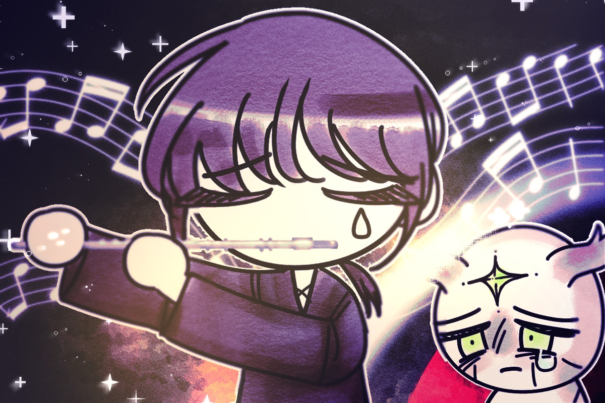

저는 수호자의 플루트를 말없이 쳐다봤고,
그런 제 얼굴을 보더니 그는 플루트를 저에게 넘겨줬습니다.
플루트를 불며 저는 떠올렸습니다.
애너벨과 함께 바닷가를 걸으며
앞으로 우리 앞에 펼쳐질 세상에 대해 나눈 이야기,
그리고 그때 아름답게 반짝이던 그녀의 눈빛과
황홀한 노을 색으로 물든 바다,
금색의 모래알들 위에서 사박대는 그녀의 발자국 소리,
그녀의 목소리에 화음을 넣는 파도소리.
그리고 그녀가 저를 떠나던 그날을, 저는 떠올렸습니다.
그렇게 연주를 마치고 수호자를 바라보니,
그는 눈물을 흘리고 있었습니다.
“수호자님, 저는 애너벨 없이는 살 수 없어요.
제발 저를 들여보내 주세요.”
제가 간곡히 부탁하자, 수호자는 눈물을 닦고 나서
한참 동안 고민했습니다.
그러다가 결국 그는 길을 비켜주며 들어가라는 손짓을 해 보였습니다.
제가 고개를 꾸벅 숙이고 입구 문을 열려는 순간,
뒤에서 수호자의 목소리가 들렸습니다.
“네가 가려는 길은 매우 험난한 길이야.
네가 더 나아가지 못하게 천사들이 방해할 테고,
바다를 지키는 괴물은 널 잡아먹으려 들 거야.
어쩌면 그냥 포기하는 것이 더 편할지도 몰라.
그런데도 정말 그녀를 구하러 갈 거니?”
저는 단호한 표정으로 고개를 끄덕였습니다.
“그래. 너라면 갈 거라고 생각했어. 몸조심하렴.”
그 말을 뒤로 하고 저는 동굴 안으로 향했습니다.
